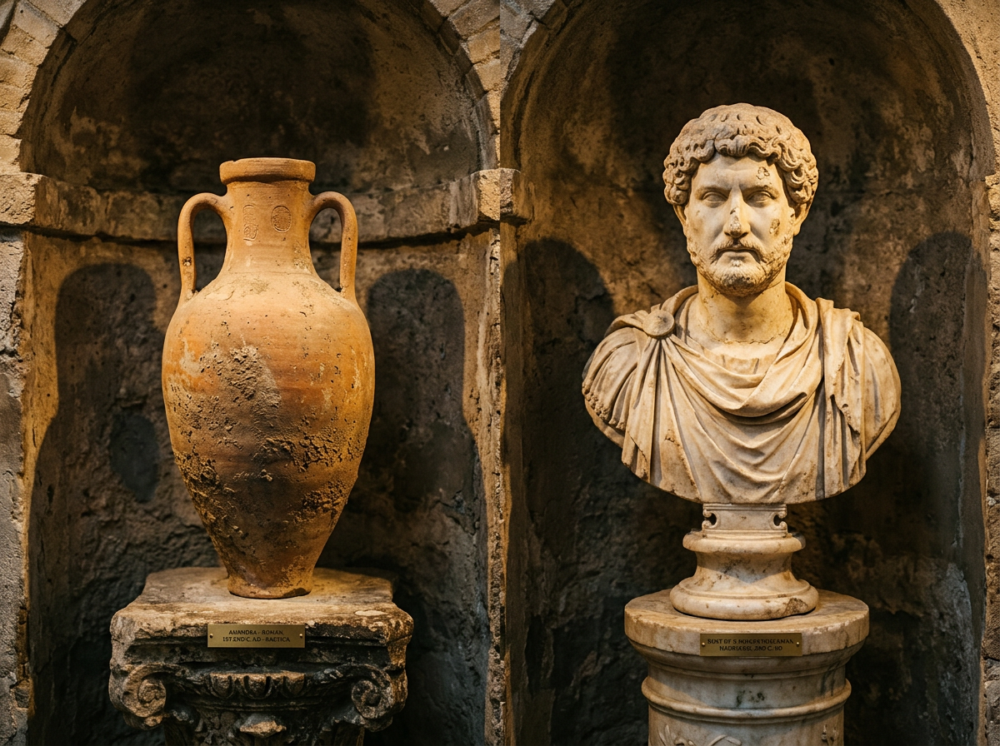
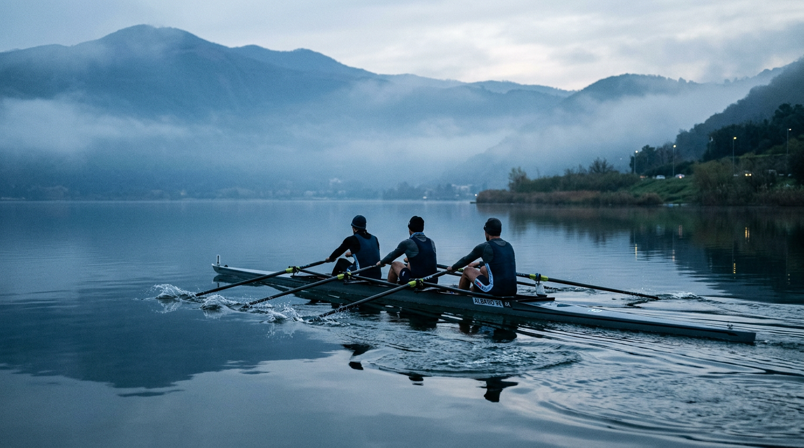

Un weekend a Castel Gandolfo
Due giorni sono la misura giusta per abitare il borgo dei Papi senza fretta: sabato dedicato al centro storico e al Palazzo Apostolico, domenica al lago e ai Castelli Romani. Un itinerario passo-passo, con orari, prezzi e coordinate verificate per la stagione 2026.

Sabato mattina — Arrivo e Palazzo Apostolico
Ore 9.30 — Da Roma Termini a Castel Gandolfo. Il treno regionale della linea FL4 impiega circa 38–40 minuti e costa 2,20 euro a tratta ([My Castelli Romani](https://www.mycastelliromani.com/blog-detail/post/253692/lake-albano-in-the-summer-what-you-need-to-know)). La stazione è sotto il borgo: si sale per Corso della Repubblica in dieci minuti di camminata, con vista sul lago che si apre poco a poco.
Ore 10.30 — Piazza della Libertà e Palazzo Apostolico. Il biglietto per il museo del Palazzo costa 11 euro intero, 5 euro ridotto, include audioguida e permette di visitare gli appartamenti pontifici arredati come al tempo di Pio XI, la sala del trono, la biblioteca privata e la cappella ([Musei Vaticani — Palazzo Apostolico](https://www.museivaticani.va/content/dam/museivaticani/pdf/visita_musei/scegli_visita/ville/Visita_palazzo_apostolico.pdf)). La visita richiede circa 60–90 minuti. La prenotazione online è consigliata.
Ore 12.30 — Pranzo in centro storico. Le trattorie storiche del borgo servono cucina romana e specialità dei Castelli: fettuccine ai porcini, saltimbocca alla romana, porchetta di Ariccia, pesce di lago d'acqua dolce, coratella d'abbacchio. Nella nostra selezione di ristoranti trovate dieci indirizzi con verifiche di orari e rating aggiornati.

Giardini pontifici e Borgo Laudato Si'.
La visita guidata Giardino di Villa Barberini + Antiquarium dura circa due ore e costa 26 euro intero, 15 euro ridotto ([Musei Vaticani — PDF Giardino](https://www.museivaticani.va/content/dam/museivaticani/pdf/visita_musei/scegli_visita/ville/Visita_singoli_giardino_antiquarium_it.pdf)). Si attraversano 55 ettari extraterritoriali di cipressi, ninfei, ulivi e vigneti, con i resti della villa di Domiziano ancora perfettamente visibili sotto la vegetazione.
Dal 2023 i giardini sono organizzati nel percorso del Borgo Laudato Si' di ecologia integrale.
Sabato sera — Aperitivo al belvedere e cena
Ore 18.30 — Aperitivo con vista. Il Belvedere Giovanni XXIII, alle spalle del Palazzo, offre il panorama più fotografato del borgo: il cratere che si spalanca a 130 metri sotto, con la punta di Monte Cavo (949 metri) all'orizzonte. Bar e caffè lungo Corso della Repubblica servono aperitivi con vini locali — Frascati DOCG, Marino DOC e Castelli Romani DOC.
Ore 20.30 — Cena panoramica. I ristoranti affacciati sul cratere (Ristorante Pagnanelli, La Perla del Lago, Bucci) sono aperti fino alle 22.30. Menu fisso di specialità tipiche 35–55 euro a persona, carta 40–70 euro.

Domenica — Il Lago Albano
Ore 9.00 — Discesa al lago. Via Bruno Buozzi scende dal borgo alla riva in 15 minuti a piedi. In alternativa, l'autobus Cotral fa la spola in poche fermate. La quota del lago è a 293 metri sul livello del mare, quella del borgo a 426 ([Wikipedia — Lago Albano](https://it.wikipedia.org/wiki/Lago_Albano)).
Ore 10.00 — Sport acquatici o battello. Il noleggio kayak singolo costa da 10 a 30 euro (una-quattro ore) presso CK Academy. Il battello elettrico Falco fa il giro guidato del lago in un'ora, 7 euro a persona, prenotazione obbligatoria al 347 610 4110 ([Parco dei Castelli Romani](https://www.parcocastelliromani.it/s/content/92003020580/1657801882.8685)). In alternativa, il periplo a piedi è un anello CAI di 10 chilometri, dislivello contenuto.
Ore 13.00 — Pranzo sulla riva. Le fraschette e trattorie del lungolago (via dei Pescatori, borgo Le Mole) servono cucina povera a prezzi corretti: paste con sugo di lago, coratella, saltimbocca. Cinquantacinque ettari di verde e il lago che sale fino a 168 metri di profondità a duecento metri dalla vostra tavola ([Wikipedia — Lago Albano](https://it.wikipedia.org/wiki/Lago_Albano)).
Ore 15.00 — Rientro o Castelli Romani. Se avete ancora energie, Nemi (10 km) e il suo lago vulcanico gemello, o Rocca di Papa e il Monte Cavo, chiudono in bellezza. Il treno di rientro a Roma Termini parte ogni ora, ultima corsa utile intorno alle 22.
Budget di riferimento
Weekend basic — 180 euro a persona
Treno andata/ritorno 4,40 · Palazzo Apostolico 11 · Pranzo trattoria 20 · B&B 65 · Cena 30 · Kayak 15 · Colazione 8 · Extra 27.
Weekend confort — 350 euro a persona
Treno 4,40 · Combinato Palazzo+Giardini 26 · Pranzo 35 · Hotel 4* 130 · Cena panoramica 55 · Battello 7 · Colazione hotel · Aperitivo 15 · Souvenir 77.
Pronto a partire?
La guida ai trasporti raccoglie orari treni, biglietteria e parcheggi. I nostri consigli su dove dormire e dove mangiare sono verificati sul campo.